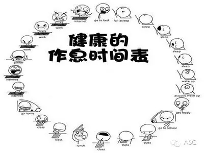
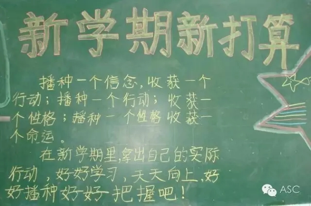

互惠动态
|
|
暑假马上结束，孩子如何收心学习，家长一定要看！
暑假即将结束，不少孩子的心都玩“野”了，新学期无法进入正常的学习状态。不少班主任表示，根据以往经验，开学头几天到一周内，孩子迟到的情况特别多，上课时也总是哈欠连天，有的干脆趴在桌子上呼呼大睡;即使听课，也无法集中精神，思想老是“开小差”，还回味着过年时的趣事，课堂效果十分糟糕，甚至出现“开学综合征”。水上小学老师们温馨提醒，为了避免以上情况出现，家长们应该提前做好“收心”工作。
安排时间，温故而知新
利用最后一周时间，完成暑假作业，并复习上学期的知识要点。很多中小学生常常到开学最后一两天才想起要做作业，临时抱佛脚地做功课，不仅身心俱疲，也使暑假作业的质量严重滑坡。因此专家认为学生应该在最后一周每天合理安排时间，把没有做完的功课完成。同时由于休息了一个暑假，可能对上学期知识有所遗忘，因此不妨安排一定时间，回顾上个学期的知识要点，如：英语单词，数学的公式、法则等……在新学期里才能“温故而知新”。假期的最后一周，尽量避免参加长途旅游和参与刺激的活动;严加控制玩游戏机、上网的时间，让心情慢慢平静下来。
按时作息，调整生物钟
在暑假中特别是临近开学的一周，家长要引导孩子开始适应上学的生物钟，尽可能的按时起床、睡觉和用餐，并配合一定的户外活动。学生应当明确暑假过后的主要任务还是学习。虽然假期里可能许多心愿没有达成，但仍要“朝前看”，不要再陷入回忆，许多未完成的事可以等待下一个假期。同时暑假期间有可能通宵玩耍或很晚睡觉，这时很有必要调整好自己的生物钟，尽量按上课期间正常作息。家长也应帮助、督促孩子按上学的作息时间来安排最后一周的生活。对学生在假期未能达成的愿望，只要是合理的、可能的，就跟孩子订好计划，尽量在下一个假期里实现，作为激励孩子在新学期学业进步的一种手段和方法。

提前制定学习计划
确立新学期的学习目标，制订学习计划。进入新学期，学生应该有新的计划和打算，可以在开学前好好计划一下。例如下学期要提高哪几门课的成绩，在学校超越的目标是什么，新学期是不是要学一门新特长等等，计划的内容应让孩子经过努力可以达到的，期望值不宜太高，让孩子还没执行就自动放弃。另一方面要预习新学期的功课，如：语文通读课文，英语预习单词，数学预习前一、二单元，划出难点等，有的放矢地为新学期做好准备。制订学习计划、树立目标可以帮助孩子树立自信心，消除假期后的失落感。

家长引导孩子转换角色
身教重于言教，家长应注重寓教于乐的引导。作为家长也应引导孩子转入新的角色，家长要让孩子知道上课并不枯燥，引导他们体验进取的乐趣，体会学习的成功感。尤其值得注意的是：家长本身的言行对孩子的影响，例如：要孩子按时睡觉休息，但家长却约上几个好友，在家里通宵打麻将。那孩子能休息得好吗?家长应该在这段时间内，和孩子一起把生活作息恢复到平时的状态，并尽量创造乐于学习的家庭氛围。
调动积极性
调动孩子积极的心态。家长要以积极、乐观的态度，激励、引导、暗示孩子，家长可以与孩子一起讨论，回想上学期的收获，确立新学期的计划，与孩子聊聊学校里面的同学、老师，帮助孩子放松紧张心情，说一些欣赏和鼓励的话语，从正面的角度给孩子以信心。同时给孩子补充一些必要的文具，让孩子感到上学的幸福感，期待着开学。
另外，家长应和孩子一起探究对开学恐惧、抗拒的真正原因，表达对孩子真诚的关心和呵护，如果孩子的“开学综合征”，到了威胁健康的程度，可以请心理医生帮助疏导。
总之，孩子的“开学综合征”，是正常现象，就像成人放长假后不愿上班一样，只要家长有策略地做好引导，孩子会很快适应新学期的生活。“开学综合征”，虽不是生理疾病，但对学生心理会有不良影响。家长应在开学前一周开始帮助孩子“热身”，以便孩子们尽快“收心”，开学初期，老师也应注意帮助孩子矫正“野”性的延续，以正面引导、鼓励为主，尽量减轻学生在学习上的压力，让学生逐步适应新学期的紧张学习。

关于互惠，您了解得够多么？
请外国学生来家庭照顾孩子，辅导孩子外语？
只了解这些是不够的！
获取更多信息请参考以下方式：
联系ASC：
电话：86-21-61116069(上海中心）
86-25-66065662（南京中心）
全国家庭均可申请！
手机：15601666586（可加微信）
Q Q：3259637585
微信：asc-center
邮箱：info@asc-center.com
网站：www.asc-aupair.com

感谢您对我们的关注